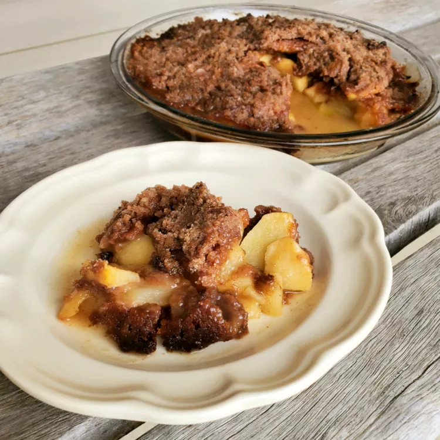

Apple Betty

Description
This apple betty requires no pie crust. Everyone always raves about this dessert with a delicious crisp topping. You can control the sweetness by adjusting the amount of streusel.
Ingredients
- 4 cups thinly sliced apples
- 1/4 cup orange juice
- 1 cup white sugar
- 3/4 cups all-purpose flour
- 1/2 teaspoon ground cinnamon
- 1/4 teaspoon ground nutmeg
- 1 pinch salt
- 1/2 cup cold butter, cubed
Steps
- Preheat the oven to 375 degrees F (190 degrees C). Lightly grease a 9-inch pie plate.
- Mound apples in the prepared pie plate. Sprinkle with orange juice
- Mix together sugar, flour, cinnamon, nutmeg, and salt in a large bowl. Cut in butter with 2 knives or a pastry blender until mixture resembles coarse crumbs. Scatter streusel over apples.
- Bake in the preheated oven until streusel is browned and filling is hot, about 45 minutes. It will thicken as it cools; server warm.
Homepage